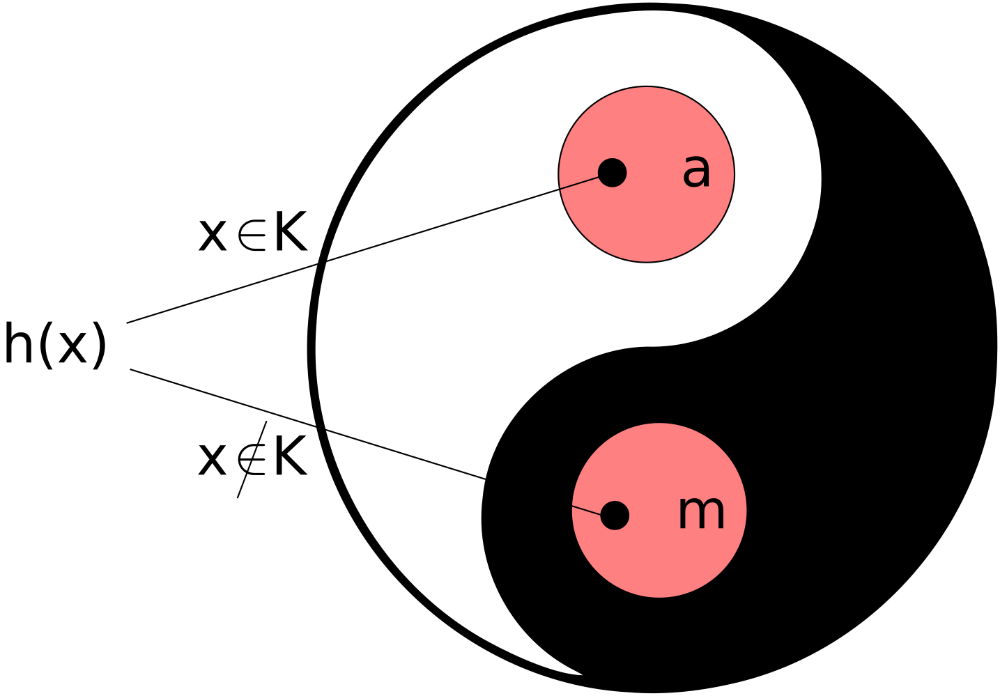

Dato un formalismo Turing completo, possiamo enumerare i programmi \(P_i\) definibili nel formalismo dato. Detta \(\varphi_i\) la funzione calcolata da \(P_i\), la numerazione dei programmi induce dunque una enumerazione di tutte le funzioni calcolabili.
Cercheremo nel seguito di caratterizzare alcune alcune delle proprietà salienti della enumerazione \(\varphi_i\), in modo da lavorare ad un livello sufficiente di astrazione rispetto al modello di calcolo sottostante.
Esiste un predicato \(T (i, n, k, t)\) tale che
- \(\varphi_i(n) = k \iff \exists t \ge k, T (i, n, k, t) = 1\)
- la funzione caratteristica di \(T\) è calcolabile
\(T\) è il predicato (intuitivamente calcolabile) che afferma che la computazione del programma di indice \(i\) su input \(n\) termina con risorse fissate (e.g. tempo o spazio) \(t\) e fornisce come risultato \(k\).
Si suppone che le risorse necessarie a produrre \(k\) siano almeno pari a \(k\) (fissando opportunamente l’unita di misura).
Si osservi che anche la funzione caratteristica del predicato
\[T^3 (i, n, t) = \exists k, T (i, n, k, t) \equiv \exists k \le t, T (i, n, k, t)\]
è ancora calcolabile, ovvero:
È possibile decidere se una computazione si arresta in un tempo dato.
Sia \(\varphi_i\) una enumerazione accettabile delle funzioni parziali calcolabili.
Useremo la notazione \(\varphi_i (n) \downarrow\) per indicare che la funzione è definita (converge) per input \(n\), e \(\varphi_i (n) \uparrow\) quando è indefinita (o diverge) per tale input.
Definiamo dominio (dom) di \(\varphi_i\) il suo insieme di convergenza, ossia
\[dom(\varphi_i) = \{n| \varphi_i (n) \downarrow\}\]
Il codominio (cod) di \(\varphi_i\) è l’insieme dei possibili output:
\[cod(\varphi_i) = \{m| \exists n, \varphi_i (n) = m\}\]
Le funzioni parziali sono ordinate parzialmente rispetto all' inclusione insiemistica dei loro grafi:
\[\varphi_i \subseteq \varphi_j \iff \forall n \in dom(\varphi_i), \varphi_i (n) = \varphi_j (n)\]
Un insieme si dice ricorsivo (o decidibile) se la sua funzione caratteristica è calcolabile.
Esempi:
Gli insiemi ricorsivi sono chiusi rispetto alle operazioni di unione, intersezione e complementazione.
Siano \(A\) e \(B\) insiemi ricorsivi, e siano \(c_A\) e \(c_B\) le loro funzioni caratteristiche.
Allora:
Un insieme si dice ricorsivamente enumerabile (r.e.) se è vuoto oppure è il codominio di una funzione totale calcolabile (detta funzione di enumerazione).
Ogni insieme ricorsivo è anche r.e.
Sia \(A\) ricorsivo e sia \(c_A\) la sua funzione caratteristica.
Supponiamo \(A\) infinito:
\[ \begin{cases} f(0) = \mu y, c_A(y) = 1\\ f(x + 1) = \mu y, c_A(y) = 1 \land y \gt f(x) \end{cases} \]
Un insieme \(A\) è ricorsivo se e solo se sia \(A\) che \(\overline{A}\) sono r.e.
\(\implies\) ovvio.
\(\impliedby\): Supponiamo che \(A\) e \(\overline{A}\) siano rispettivamente enumerati da \(f\) e \(g\). Poniamo
\[ \begin{cases} h(2x) = f(x)\\ f(2x + 1) = g(x) \end{cases} \]
\(h\) è suriettiva su \(N\).
Sia \(pari(n)\) la funzione caratteristica dell’insieme dei numeri pari.
\[c_A (n) = pari( \mu y (h(y) = n)\]
\(c_A\) è calcolabile e totale.
Sia \(A\) un insieme di numeri naturali. Le seguenti affermazioni sono equivalenti: 1. \(A = \emptyset \lor \exists f \colon A = cod(f)\), \(f\) totale calcolabile, 2. \(\exists g \colon A = dom(g)\), \(g\) parziale calcolabile 3. \(\exists h \colon A = cod(h)\), \(h\) parziale calcolabile
\(1 \implies 2\): Il caso \(A = \emptyset\) è ovvio. Sia \(A = cod(f )\) per \(f\) tot. calc., poniamo
\[g (x) = μy (f (y ) = x)\]
Chiaramente \(g\) è calcolabile e \(g(x) \downarrow\) se e solo se \(x \in cod(f)\).
\(2 \implies 3\): Sia \(A = dom(g )\); basta considerare
\[h(x) = x + 0 \cdot g (x)\]
\(3 \implies 1\) Sia \(A = cod(h)\), per \(h\) parziale calcolabile. Il caso \(A = \emptyset\) è triviale. Posto \(a \in A\) e \(h = \varphi_i\) consideriamo
\[f(\langle x, k, s \rangle) = \begin{cases} k &\text{se } T(i, x, k, s) = 1\\ a &\text{altrimenti} \end{cases} \]
dove \(T\) è il predicato di Kleene. \(f\) è totale e calcolabile e \(cod(f) = A\).
N.B. \(\rightarrow\) L’insieme \(K = \{ x | \varphi_x (x) \downarrow \}\) è r.e. \(\rightarrow\) La funzione \(k(x) = \varphi_x (x)\) è calcolabile e \(K = dom(k)\).
Possiamo definire una enumerazione \(W \colon N \rightarrow RE\) dell’insieme \(RE\) di tutti gli insiemi r.e. ponendo
\[W_i = dom(\varphi_i)\]
\[K = \{ x | \varphi_x (x) \downarrow \} = \{ x | x \in dom(\varphi_x)\} = \{ x |x \in W_x \}\]
\[\overline{K} = \{ x | \varphi_x (x) \uparrow \} = \{ x | x \not \in dom(\varphi_x)\} = \{ x |x \not \in W_x \}\]
Un insieme \(A\) è r.e. se e solo se esiste un insieme \(B\) ricorsivo tale che
\[A = \{ m | \exists n, \langle n, m \rangle \in B \}\]
\(\impliedby\) Sia \(c_B\) la funzione caratteristica di \(B\). Allora \(A = dom(f)\) dove
\[f(m) = \mu n, c_B(\langle n, m \rangle) = 1\]
\(\implies\) Sia \(A = dom(\varphi_i)\). Dunque \(m \in A \iff \varphi_i(m) \downarrow \iff \exists n, T (i, n, m) = 1\), dove \(T\) è il predicato ternario di Kleene.
Basta dunque porre \(B = \{ \langle n, m \rangle |T (i, n, m)\}\).
La classe degli insiemi ricorsivamente enumerabili è chiusa per unione.
Ossia se \(A\) e \(B\) sono insiemi r.e. anche \(A \cup B\) è r.e.
Infatti sia \(A = cod(f')\) e \(B = cod(g')\) con \(f'\) e \(g'\) funzioni parziali calcolabili, allora \(A \cup B = cod(h')\) dove
\[ \begin{cases} h'(2x) = f'(x)\\ h'(2x + 1) = g'(x) \end{cases} \]
La classe degli insiemi ricorsivamente enumerabili è chiusa per intersezione.
Ossia se \(A\) e \(B\) sono insiemi r.e. anche \(A \cap B\) è r.e.
Infatti sia \(A = dom(f)\) e \(B = dom(g)\) per \(f\), \(g\) parziali calcolabili, allora \(A \cap B = dom(h)\) dove \(h(x) = f(x) \cdot g(x)\).
Attenzione!
La classe degli insiemi ricorsivamente enumerabili è chiusa per complementazione?
Ossia se \(A\) è r.e. anche \(N \setminus A\) è r.e.? \(\rightarrow\) Decisamente no!
Si pensi all’insieme \(K = \{ i | \varphi(i) \downarrow \}\) che è r.e. ma il suo complementare \(N \setminus K = K = \{ i | \varphi_i(i) \uparrow \}\) non è nemmeno r.e.
N.B. Esistono insiemi che non sono nè ricorsivi nè ricorsivamente enumerabili.
Siano \(A, B \subseteq N\) e \(f \colon N \rightarrow N\) 1. se \(A\) è ricorsivo e \(f\) è totale calcolabile, allora \(f^{-1}(A)\) è ricorsivo 2. se \(A\) è r.e. e \(f\) è calcolabile, allora \(f^{-1}(A)\) è r.e 3. se \(A\) è r.e. e \(f\) è calcolabile, allora \(f(A)\) è r.e
- una unione r.e. di insiemi r.e. è ancora r.e.: \(\forall x, \bigcup_{i \in W_x} W_i\) è r. e.
- una interesezione r.e. di insiemi r.e. non è necessarimente r.e.: \(\exists x, \bigcap_{i \in W_x} W_i\) non è r.e.
Un insieme (proprietá) \(A \subseteq N\) si dice estensionale se per ogni \(i\), \(j\)
\[i \in A \land \varphi_i \equiv \varphi_j \implies j \in A\] Ovvero: \(\varphi_i \equiv \varphi_j \implies c_A(i) = c_A(j)\)
Una proprietà estensionale di (indici di) programmi è una proprietà relativa alla funzione calcolata (estensione) e non alla forma o al modo (intensione) in cui questa viene calcolata.
| \(P(i)\) estensionale | \(P(i)\) intensionale |
|---|---|
| \(\varphi_i\) è totale | \(\forall n \exists k, T(i, n, k, i^2) = 1\) |
| \(\varphi_i \equiv f\) | \(\varphi_i \equiv f \land i \le 100\) |
| \(5 \in cod(\varphi_i)\) | \(i \in cod(\varphi_i)\) |
| \(dom(\varphi_i)\) è finito | \(\| dom(\varphi_i)\| \gt i\) |
| \(\varphi_i(0) \uparrow\) | \(\varphi_i(i) \uparrow\) |
| \(\exists n, \varphi_i(n) \downarrow \land \varphi_i(n + 1) \downarrow\) | \(\varphi_i \equiv \varphi_{i + 1}\) |
Remark: Il complementare di un insieme estensionale è estensionale.
Una proprietà estensionale di programmi è decidibile se e solo se è banale.
Sia \(c\) la funzione caratteristica della proprietà. Sia \(m\) un indice per la funzione ovunque divergente, e sia \(a\) tale \(c(a) \not = c(m)\).
Cerco \(h\) calcolabile tale che \(\varphi_{h(x)} = \begin{cases} \varphi_a &\text{se } x \in K \\ \varphi_m &\text{se } x \not \in K \end{cases}\)

Consideriamo la funzione
\[\varphi_{h(x)}(y) = \varphi_x(x); \varphi_a(y)\]
dove \(;\)
denota la composizione sequenziale.
Per la proprietà smn \(h\) è totale e calcolabile.
È banale verificare che
\[\varphi_{h(x)} = \begin{cases} \varphi_a &\text{se } x \in K \\ \varphi_m &\text{se } x \not \in K \end{cases}\]
Dunque, utilizzando l'**ipotesi di estensionalitá**, avremmo
\[c(h(x)) = \begin{cases} c(a) &\text{se } x \in K \\ c(m) &\text{se } x \not \in K \end{cases}\]
che permetterebbe di decidere l’appartenenza a \(K\) (e quindi di risolvere l'**halting problem**).
\[A = \{i | \varphi_i(0) \downarrow \}\]
\(A\) non è banale, e dunque, per Rice, non può essere ricorsivo (uso diretto); d’altra parte \(A\) è r.e., dunque
\[\overline{A} = \{ i | \varphi_i (0) \uparrow \}\]
non è neppure r.e. altrimenti sia \(A\) che \(\overline{A}\) sarebbero ricorsivi, contraddicendo il risultato di Rice (uso indiretto).
Sia \(A\) un insieme estensionale (rispetto a \(\varphi\)) di numeri naturali:
\(A\) è detto monotono se per ogni \(i\) e \(j\)
\[i \in A \land \varphi_i \subseteq \varphi_j \implies j \in A\]
ovvero se ogni estensione della funzione \(\varphi_i\) appartiene ad \(A\).
\(A\) è detto compatto se per ogni \(i \in A\) esiste \(j \in A\) tale che
ovvero se ogni restrizione di \(\varphi_i\) a grafo finito appartiene ad \(A\).
| insieme | monotonia | compattezza |
|---|---|---|
| \(\{ i \vert \varphi_i(0)\downarrow\}\) | si | si |
| \(\{i \vert \varphi_i \text{ è totale}\}\) | si | no |
| \(\{i \vert cod(\varphi_i) \text{ è finito}\}\) | no | si |
| \(\{i \vert dom(\varphi_i) \land \overline{dom(\varphi_i)} \text{ sono infiniti} \}\) | no | no |
Remark: se \(A\) e \(\overline{A}\) sono entrambi monotoni allora sono banali.
Ogni insieme estensionale A ricorsivamente enumerabile é monotono.
Supponiamo che esistano due indici \(i\) e \(j\) tali che \(i \in A\), \(j \not \in A\) and \(\varphi_i \le \varphi_j\).
Consideriamo la funzione \(\varphi_{f(x)}(y ) = \varphi_i(y)|(\varphi_x(x); \varphi_j(y))\)
dove |
denota la composizione parallela (l’output è quello del primo thread terminante). È facile vedere che
\[\varphi_{f(x)} = \begin{cases}\varphi_j &\text{ se } x \in K\\ \varphi_i &\text{ se } x \not \in K \end{cases}\]
nel caso \(x \in K\) uso l’ipotesi \(\varphi_i \le \varphi_j\). Dunque
\[f(x) \in A \iff x \in \overline{K}\]
e \(\overline{K}\) sarebbe r.e., che è assurdo.
Ogni insieme estensionale \(A\) ricorsivamente enumerabile é compatto.
Sia \(A\) un insieme estensionale ricorsivamente enumerabile.
Supponiamo che \(i \in A\) e che per ogni \(j\) tale che \(\varphi_j \subseteq \varphi_i\) e \(\varphi_j\) è finito si abbia \(j \not \in A\).
Consideriamo la funzione \(f\) totale calcolabile definita come segue (per smn)
\[\varphi_{f(x)}(\begin{cases}\end{cases}\]
Se \(x \in \overline{K}\) allora \(\varphi_{f(x)} \approx \varphi_i\) e dunque \(f(x) \in A\).
Se \(x \in K\) allora la computazione di \(\varphi_x(x)\) terminerà in un numero finito \(t\) di passi, e la funzione \(\varphi_{f(x)}\) convergerà solo per valori di input \(y \le t\).
Dunque \(f(x)\) è un indice per una sottofunzione finita di \(\varphi_i\), e per ipotesi \(f(x) \not \in A\).
In conclusione
\[f(x) \in A \iff x \in \overline{K}\]
e \(K\) sarebbe r.e., il che é assurdo.
I teoremi di Rice-Shapiro permettono di dimostrare facilmente che determinati insiemi estensionali non sono r.e.
Ad esempio:
Warning: Esistono insiemi estensionali monotoni e compatti ma non r.e., ad esempio
\[\{ i \vert dom(\varphi_i) \cap \overline{K} \not = \emptyset\}\]
Per ogni funzione totale calcolabile \(f\) esiste \(m\) tale che \(\varphi_{f(m)} \approx \varphi_m\)
Per smn esiste \(h\) totale e calcolabile tale che
\(\varphi_{h(x)}(y) = g(x, y) = \varphi_{f(\varphi_x(x))}(y)\)
Sia \(p\) un indice per \(h\) e poniamo \(m = \varphi_p(p) = h(p)\) (che è sicuramente definito in quanto \(h\) è totale). Allora, per ogni \(y\)
\[\varphi_m(y) = \varphi_{h(p)}(y) = g(p, y) = \varphi_{f(\varphi_p (p))}(y) = \varphi_{f(m)}(y)\]
L’interprete permette di simulare la ricorsione!
Supponiamo di voler definire una funzione ricorsiva \(f\) tale che \(f(x) = M[f, x]\).
Per smn esiste \(g\) **totale calcolabile* tale che \(\varphi_{g(i)}(x) = M[\varphi_i , x]\).
Allora \(f = \varphi_m\) dove \(m\) é il punto fisso di \(g\).
Per ogni funzione binaria totale calcolabile \(f\) esiste una funzione calcolabile \(s\) tale che, per ogni \(y\)
\[\varphi_{f(s(y),y)} \approx \varphi_{s(y )}\]
Per smn esistono \(r\), \(h\) totali e calcolabili tale che
\[\varphi_{\varphi_{r(y)}(x)}(z) = \varphi_{h(x,y)}(z) = g(x, y, z) = \varphi_{f(\varphi_x(x),y)}(z)\]
Posto \(s(y) = \varphi_{r(y)}(r(y))\) abbiamo, per ogni \(z\)
\[\varphi_{s(y)}(z) = \varphi_{\varphi_{r(y)}(r(y))}(z) = \varphi_{h(r(y),y)}(z) = \varphi_{f(\varphi_{r(y)}(r(y)),y)}(z) = \varphi_{f(s(y),y)}(z)\]
L’uso del teorema del punto fisso per simulare ricorsione è particolarmente pulito, in quanto la funzione \(g\) è estensionale, nel senso che
\[\varphi_i \equiv \varphi_j \implies \varphi_{g(i)} \equiv \varphi_{g(j)}\]
Tuttavia il teorema è vero per qualunque trasformazione effettiva.
Ad esempio:
in ogni enumerazione accettabile di programmi esistono sicuramente due programmi consecutivi con comportamenti identici, ovvero esiste \(i\) tale che
\[\varphi_{i+1} \equiv \varphi_i\]
Dimostrazione: si prenda il punto fisso del successore.
Esiste un programma che stampa se stesso
, cioè esiste \(i\) tale che
\[\varphi_i(0) = i\]
Dimostrazione: Per smn esiste \(h\) tale che \(\varphi_{h(x)}(y) = x\); se ne prenda un punto fisso.
Supponiamo per assurdo che \(A\) sia ricorsivo, ma non banale. Esistono dunque \(i\) e \(j\) tali che \(i \in A\) e \(j \in \overline{A}\).
Considero la seguente funzione:
\[h(x) = \begin{cases}i &\text{ se } x \in \overline{A}\\ j &\text{ se }x \in A\end{cases}\]
Per definizione
\[h(x) \in A \iff x \in \overline{A}\]
Inoltre, se \(A\) è ricorsivo \(h\) è totale calcolabile e per il teorema del punto fisso di Kleene, esiste un indice \(b\) tale che \(\varphi_b = \varphi_{h(b)}\). Avremmo quindi
\[b \in A \iff h(b) \in A \iff b \in \overline{A}\]
che è una contraddizione.
Siano \(A, B \subseteq N\); \(A\) si dice riducibile (m-riducibile) a \(B\) (in simboli \(A \le_m B\)), se esiste una funzione totale e calcolabile \(f\) tale che
\[x \in A \iff f(x) \in B\]
Due insiemi si dicono equivalenti (m-equivalenti) (in simboli \(A =_m B\)), se \(A \le_m B\) e \(B \le_m A\);
Osservazioni:
Sia \(K_0 = \{\langle i, n \rangle \vert n \in W_i\}\)
\(K \le_m K_0\). Siccome
\[i \in K \implies i \in W_i \implies \langle i, i \rangle \in K_0\]
la funzione \(f(x) = \langle x, x \rangle\) permette di ridurre \(K\) a \(K_0\).
\(K_0 \le_m K\). Per smn consideriamo la funzione totale calcolabile \(h\) per cui
\[\varphi_{h(i,x)}(y) = g(i, x, y) = \varphi_i(x)\]
Abbiamo
\[\langle i, n \rangle \in K_0 \iff n \in W_i \iff \forall y, \varphi_{h(i,n)}(y) \downarrow \iff \varphi_{h(i,n)}(h(i, n)) \downarrow \iff h(i, n) \in K\]
Quindi la funzione \(h\) riduce \(K_0\) a \(K\).
Un insieme si dice m-completo* se è r.e. ed ogni insieme r.e. è riducibile ad esso.
\(K_0\) e \(K\) sono insiemi completi.
Dato che \(K_0 =_m K\) è sufficiente dimostrare la proprietà per \(K_0\).
Abbiamo già dimostrato che se \(A \le_m K_0\) allora \(A\) è r.e. e dunque esiste \(i\) tale che \(A = W_i\). Allora, per ogni \(n\)
\[n \in A \iff n \in W_i \iff \langle i, n \rangle \in K_0\]
\(A\) é completo se e solo se \(A =_m K\).
Se \(A =_m K\) allora \(A\) é r.e. e m-completo perché lo é \(K\).
Viceversa se \(A\) é m-completo, allora é r.e. e per la completezza di \(K\), \(A \le_m K\); inoltre, siccome \(K\) é r.e., \(K \le_m A\) per la m-completezza di \(A\).
Sia \(A \subseteq N\).
\(A\) si dice produttivo se esiste \(f\) totale e calcolabile tale che per ogni \(i\)
\[W_i \subseteq A \implies f(i) \in A \setminus W_i\]
\(A\) si dice creativo se è r.e. ed il suo complemento \(\overline{A}\) è produttivo.
Si osservi che un insieme produttivo non puó essere r.e.
Infatti, se \(A = W_i\) allora preso \(W_i \subseteq A\) avremmo che \(A \setminus W_i = \emptyset\) e quindi \(f(i) \not \in A \setminus W_i\).
\(K\) é creativo (e la funzione di produzione è l'**identità**).
Sia \(A \in N\). \(A\) é produttivo se e solo se \(K \le_m A\).
Sia \(A \in N\). \(A\) é creativo se e solo se \(A =_m K\).